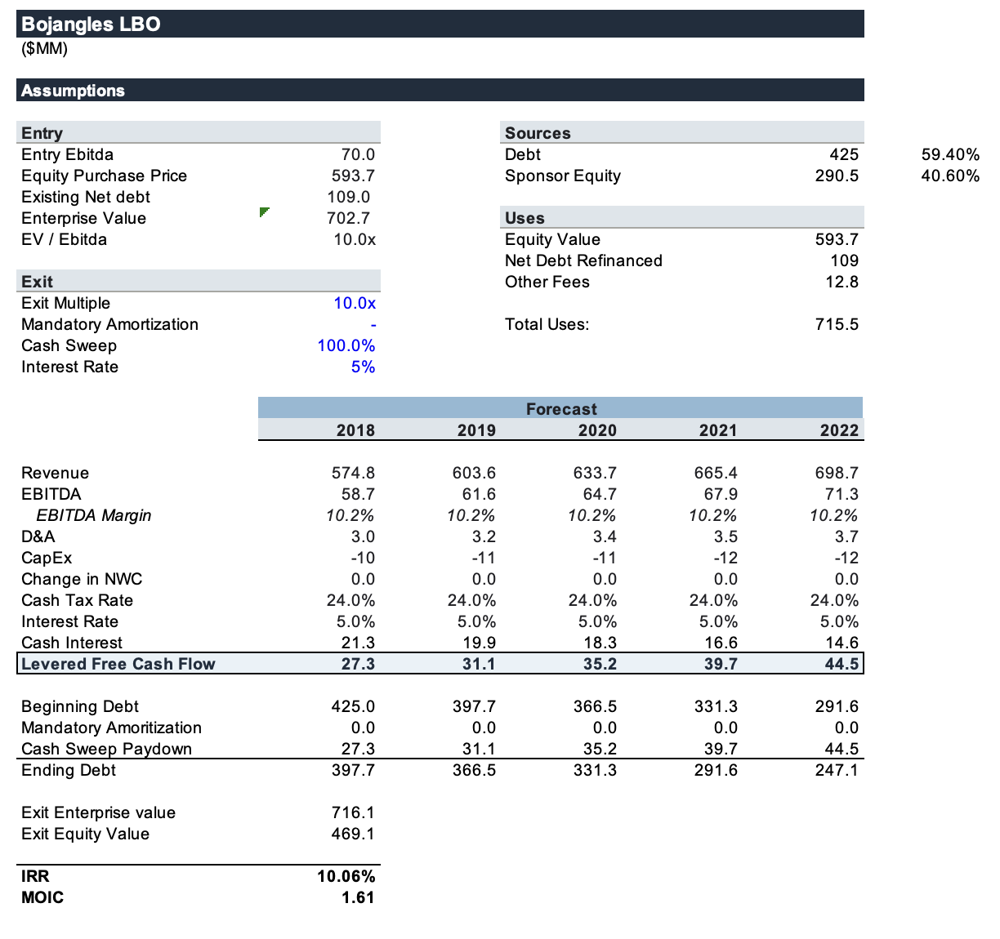
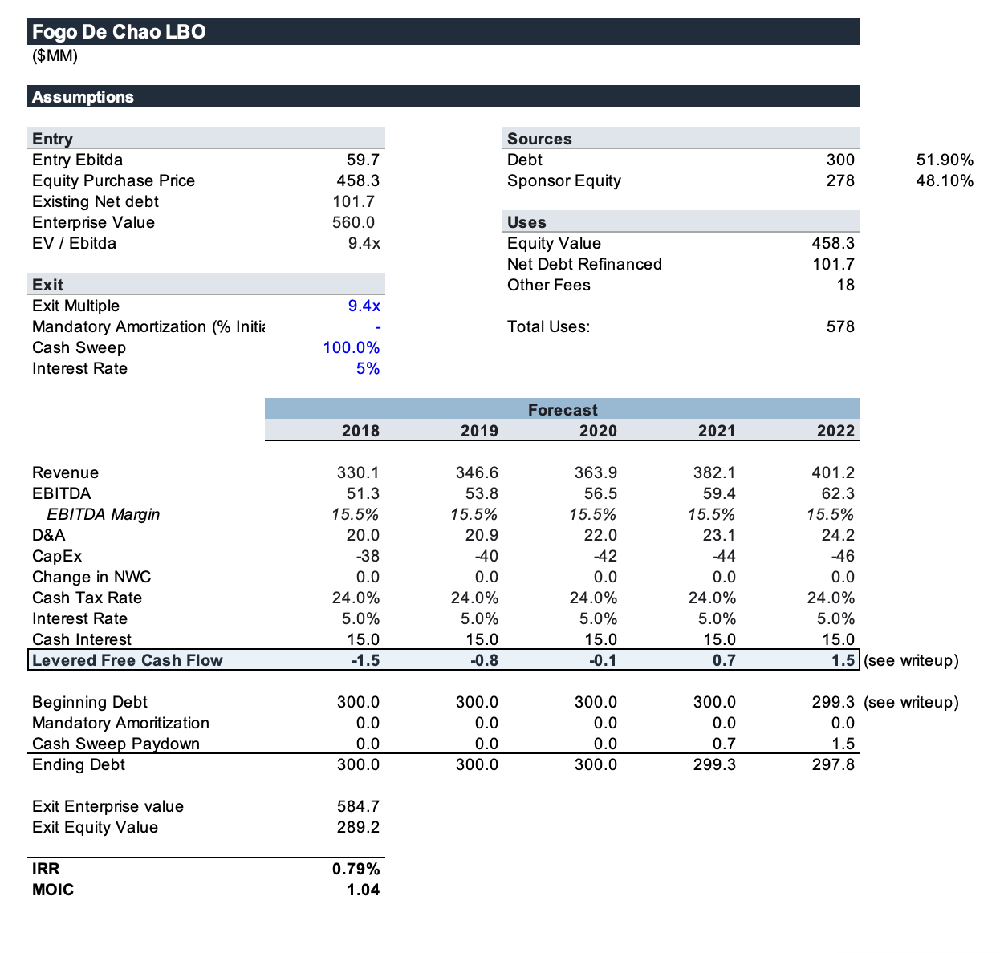

A controlled comparison between two LBOs
After doing some interviews I realized I do not have LBO fundamentals down well enough. Therefore, in order to improve, I’m going to perform a controlled analysis on two acquired food companies: Bojangles and Fogo De Chão. I intentionally stripped away almost all advanced LBO logic to see simply what would happen if two similarly valued companies are acquired at similar consideration mixes and EV/EBITDA ratios, but with different cash flow generation under the hood. Both transactions were announced in 2018. Bojangles had an implied enterprise value of approximately $703 million, while Fogo de Chao had an enterprise value of approximately $560 million. Acquisition happened in 2019 and 2018 respectively.
Their cash flow differs mainly because Fogo de Chão has much higher CapEx. It operates large, company-owned, full-service restaurants and must spend more on new locations, kitchen equipment, furniture, leasehold improvements, and renovations. Bojangles is more franchise-oriented, so franchisees fund more of the restaurant investment. That leaves Bojangles with higher free cash flow and faster debt paydown.
For this build I assumed the exact same growth numbers and constant margins. PLEASE NOTE: this is not indicative at all of what I think will actually happen for these companies. The purpose of me doing this is to see what drives LBO returns when multiple expansion and EBITDA growth can be controlled. Debt Paydown is the answer, but I'm interested to see how differing cash flows create that.


The difference between the two models is quite staggering. Despite both companies growing 5% annually, and with similar sponsor equity/debt ratios, the Bojangles acquisition's IRR dwarfs the acquisition of Fogo de Chao's. This is largely due to Fogo de Chão's Capex being on average 4x higher than Bojangles.
This simple, unrealistic model, taught me a ton about what drives an LBO return and I am very glad I did it. I had to set an exit multiple to 12x to get a MOIC even equal to Bojangles, showing just how big of a difference debt paydown makes in creating an LBO return.
Finally, I couldn't help but wonder what drove Fogo De Chão's multiples, and the answer is growth. Rhône, the firm that bought Fogo De Chão, actually sold it in 2023 for a MOIC of at least 3.0x according to Reuters. My model fails because CapEx goes nowhere, as I keep revenue growth the exact same. In reality, Rhône was able to expand its restaurant base, and Fogo De Chão grew 15% annually before the sale. Out of the 3 LBO model drivers, EBITDA growth is what Rhône was betting on, and it seems they succeeded in doing so.